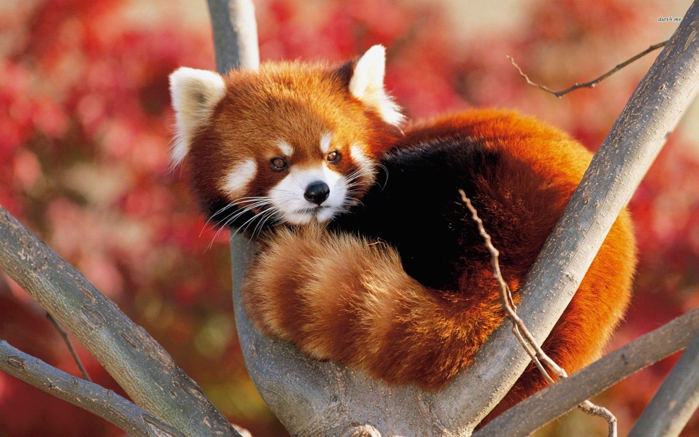

Red Panda
Red pandas' long and bushy tails are used for balance while climbing and for warmth by wrapping them it around themselves.
- Scientific Name: Ailurus fulgens
- Average Length Body/Tail: Body: 40 - 64cm(16 - 25 in)/Tail: 28 - 59cm(11 -23 in)
- Average Lifespan: 8 - 10 years
- Habitat: Eastern Himalaya
Red Panda's are small red weasal like animals with red fur. They have bright reddish-orange colored bodies, striped tailes, dark colored feet and cute little ears.